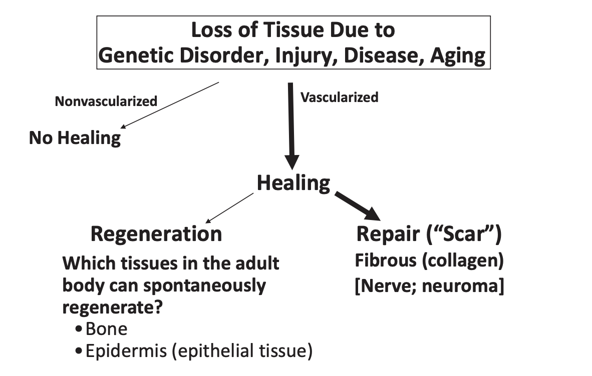

Fig. 2. Structural Organization of the Human Body [1]
Tissue Classification
Matrix Continuous (Occacionally, Cell Continuous)
CT: Connective Tissue
Cell Continuous
Ep: Epithelia
Mu: Muscle
Ne: Nerve
How many cells do we have?
37 trillion cells in the human body; Bianconi, Ann Hum Biol 40:463 (2013)
Additionally, 6 ft lenght of DNA in each nucleus. Total lenght of your DNA is 42 billion miles.
Damage
Damage occurs naturally from metabolic or hyrolytic processes.
Metabolic agents that damage DNA include:
reactive oxygen species
reactive nitrogen species
reactive carbonyl species
lipid peroxidation products
alkylating agents
Naturally occuring oxidative DNA damages arise at least 10,000 times per cell per day in humans.
Alteration in the chemical structure of DNA
Break in a DNA strand
Missing nucleobase
Chemically changed base
Most DNA damages can undergo DNA repair, but repair is not 100% efficient. So, un-repaired DNA damages accumulate in non-replicating cells, such as cells in the brains or muscles of adult mammals, and can cause disorders and aging.
Mutations
“In humans, the mutation rate is about 50–90 de novo mutations per genome per generation, that is, each human accumulates about 50–90 novel mutations that were not present in his or her parents.”
– Estimated from a study in Iceland in which 1,548 sets of DNA (2 parents and at least 1 child) were sequenced
Why the need for TEOR?

Fig. 3. Pathways of Tissue Healing and Regeneration [1]
Tools*
Materials (Biomaterials): Serve as scaffolds to accommodate endogenous cell infiltration and/or as delivery vehicles for bioactive agents
Cells:Grown outside the body (exogenous)
Regulatory molecules:Growth factors: to stimulate proliferation of certain cells in the body (mitogen) and to attract them to the defect (chemoattractant), and to stimulate other cell processes
* Individually, the tools are necessary, but not sufficient
Principles and Practices of TEOR
Principles:The biological processes that underly regeneration
Practices:What are the tools and how are they used
Current Status
No organ which cannot spontaneously regenerate has been fully regenerated using the tools of Term: biomaterials, cells, and molecular regulators. But there have been notable improvements in the reparative process, which approach regeneration, resulting in meaningful improvements in clinical outcome
We continue to use the terms “regeneration” and “regenerative” to reflect our aspiration
Composition of Tissue
Cells
Extracellular matrix
Regulators
Chemical
Diffusible: autocrine, paracrine, and endocrine factors (viz., growth factors)
Autologous: derived from the same individual (minimizes immune rejection)
Exogenous: derived from external sources (e.g., donor or animal)
State of Differentiation
Stem Cells: undifferentiated cells with self-renewal and multipotent capabilities
Undifferentiated: not yet committed to a specific cell lineage
Differentiated: mature cells specialized for specific functions
Modification
Native: unmodified, naturally occurring cells
Altered: genetically or chemically modified cells (e.g., iPSCs)
Where is the problem, and how to deal with it? — This classification helps identify which type of cell is most appropriate for therapeutic applications depending on the target tissue, immune compatibility, and regenerative strategy.